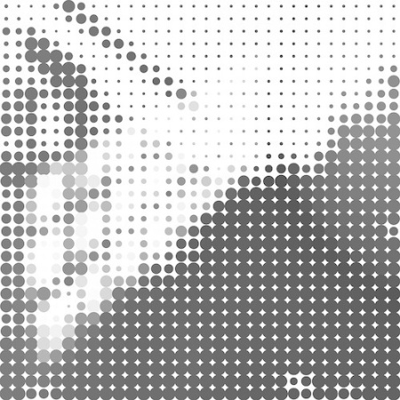
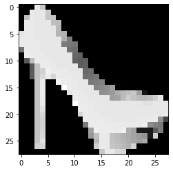
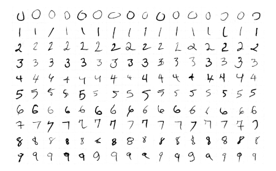
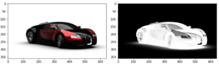
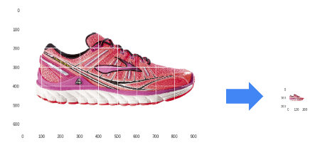
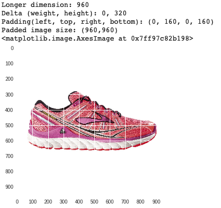
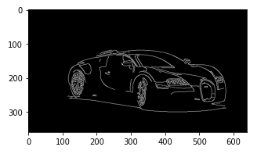
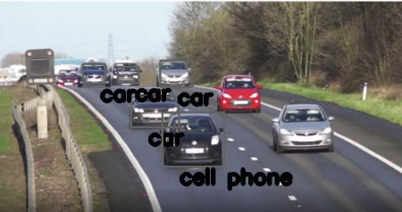
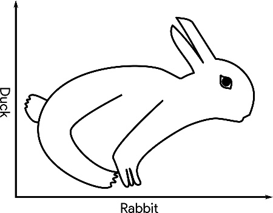

Adjust the sliders and dropdown to see the feature count change dynamically!
Even More Features
How many features would a 12 megapixel image (common for phone cameras) have if stored in RGB?
Megapixel Feature Count
\[ 12,000,000 \times 3 = 36,000,000 \]
An extremely large number of features! This makes training traditional models difficult. Lower resolution images are often used for initial training.
Grayscale: Reducing Complexity
Grayscale images use a single number (e.g., 0-255 or 0.0-1.0) to represent pixel intensity. This effectively reduces the feature count by a factor of three.

Grayscale Image
Other Image Formats
Beyond RGB and Grayscale, various formats exist, each with specific applications:
HSV: Hue, Saturation, Value (perceptually organized)
BGR: Blue, Green, Red (common in some computer vision libraries)
Real-World Image Challenges
Images encountered in real-world scenarios are rarely simple. They often contain multiple objects and background clutter.
Busy Street Scene
Lab Exercise: Fashion-MNIST
We’ll start with controlled datasets, like Fashion-MNIST: 70,000 grayscale, 28x28 pixel images of single clothing items.

Ankle Boot Example
Fashion-MNIST Class Labels
Label
Class
0
T-shirt/top
1
Trouser
2
Pullover
3
Dress
4
Coat
5
Sandal
6
Shirt
7
Sneaker
8
Bag
9
Ankle boot
Lab Exercise: MNIST Digits
Another clean dataset: handwritten digits for classification (0-9). Similar 28x28 grayscale format, one digit per image.

Handwritten Digits
Your Turn!
Get hands-on experience with image classification datasets.
Images and Videos: Foundations for ECE ML
Images and video processing are integral to many ML applications in ECE.
What is an Image, Really?
At its core, an image is a grid of pixels. Each pixel is a sampled data point representing color at a specific location.
Image Encodings
Not all pixels are encoded in the same way. Various encoding schemes exist, influencing data representation and processing.
Grayscale vs. Color Images
A primary distinction: single-channel grayscale or multi-channel color. This choice affects feature count and information richness.

Color vs Grayscale Car
Grayscale Pixel Ranges
Grayscale values can range from: - Integers: [0, 255] (8-bit unsigned integer) - Floats: [0.0, 1.0] (normalized for neural networks)
Grayscale Car
Interactive Pixel Normalizer
Normalize a pixel value from [0, 255] to [0.0, 1.0] or vice versa.
viewof pixel_value_0_255 = Inputs.range([0,255], {value:128,step:1,label:"Input Pixel Value (0-255):"});viewof normalization_type = Inputs.select(["Normalize to [0.0, 1.0]","Scale to [0, 255] (from [0.0, 1.0])"], {value:"Normalize to [0.0, 1.0]",label:"Operation:"});
Color Image Encodings: A Spectrum
From RGB to CMYK, many color spaces exist. Each offers a different way to represent color, impacting applications from display technology to printing.
Color Car
Modifying Images: Encoding Transformations
Python libraries like OpenCV (cv) and NumPy (for array operations) facilitate these transformations.
import cv2# Convert from BGR encoding (common in OpenCV) to RGB image = cv2.cvtColor(image, cv2.COLOR_BGR2RGB)# Normalize pixel values from [0, 255] to [0.0, 1.0]image = image /255.0# Scale pixel values from [0.0, 1.0] back to [0, 255]image = (image *255).astype(int)
Modifying Images: Resizing
Resizing images is often necessary to match model input requirements. Care must be taken to avoid distortion.

Resized Running Shoe
Modifying Images: Padding
Padding helps maintain aspect ratio and prevents image distortion during resizing. Useful for ensuring all images conform to a fixed input size.

Padded Running Shoe
Modifying Images: Centering
Advanced techniques can find and center the focal object. Algorithms like Canny edge detection help pinpoint important features.

Car with Edge Detection Lines
Modifying Images: Rotation
Image augmentation often involves various transformations, including rotation, to increase data diversity and model robustness.
Rotated Color Car
Other Image Augmentations
What other image augmentations can you imagine?
Cutting/Mixup: Splicing parts of images to create new training examples.
Dropout: Randomly removing portions of an image during training.
Generative Models: Creating synthetic data to augment existing datasets.
Color Jittering: Randomly adjusting brightness, contrast, saturation.
Understanding Video Data
For our purposes, video is simply a sequence of images (frames).
Consider: - Frame Rate (FPS): Number of images per second (e.g., 30 fps, 60 fps). - Change between frames: Varies greatly based on content.
Your Turn
It’s time to practice working with images and video. This involves multiple labs: 1. Image processing with PIL (Pillow). 2. Image processing with OpenCV. 3. Video processing (extracting frames from video).
These labs build towards a project on classifying items in a video. Have fun!
Saving and Loading Models
In real-world applications, models are typically saved after training and loaded for deployment. This enables reusability, fine-tuning, and sharing.
Pickling scikit-learn Models
Standard Python’s pickle module can serialize (save) and deserialize (load) scikit-learn models.
Saving a model
import picklefrom sklearn.linear_model import LogisticRegression# Assume 'model' is a trained scikit-learn modelmodel = LogisticRegression() # Placeholder for a real trained model# ... train model ...model_file ='my_model.pkl'withopen(model_file, 'wb') as output: pickle.dump(model, output, pickle.HIGHEST_PROTOCOL)
Loading and using a model
import picklemodel_file ='my_model.pkl'withopen(model_file, 'rb') asinput: model_restored = pickle.load(input)# Example: make a prediction (dummy input)print(model_restored.predict([[45, 34, 2]])) # Placeholder
Saving and Loading Keras Models
Keras (built on TensorFlow) provides native functions for saving and loading models in its own format or H5.
Saving a Keras model
import tensorflow as tffrom tensorflow import keras# Assume 'model' is a trained Keras modelmodel = keras.Sequential([keras.layers.Dense(1, input_shape=(3,))]) # Placeholdertf.keras.models.save_model( model, 'my_model.tf')
Loading a Keras model
import tensorflow as tfloaded_model = tf.keras.models.load_model('my_model.tf')# Example: Summarize the loaded modelloaded_model.summary()
Loading Frozen Graphs: Historical Context
“Frozen graphs” refer to TensorFlow 1.x models saved as a single .pb file. They represent a static computation graph with embedded weights.
Loading the Graph Definition
import tensorflow as tfimport osfrozen_graph_path = os.path.join("path", 'frozen_inference_graph.pb')with tf.io.gfile.GFile(frozen_graph_path, "rb") as f: graph_def = tf.compat.v1.GraphDef() loaded = graph_def.ParseFromString(f.read())
Note
This process uses tf.compat.v1, indicating compatibility for older TensorFlow 1.x models within a TensorFlow 2.x environment.
Loading Frozen Graphs: Wrapping for TF2
TensorFlow 1.x used lazy execution; TensorFlow 2.x uses eager execution. tf.compat.v1.wrap_function bridges this gap for seamless integration.
def wrap_graph(graph_def, inputs, outputs, print_graph=False): wrapped = tf.compat.v1.wrap_function(lambda: tf.compat.v1.import_graph_def(graph_def, name=""), [])# Prune the graph to only include specified inputs and outputsreturn wrapped.prune( tf.nest.map_structure(wrapped.graph.as_graph_element, inputs), tf.nest.map_structure(wrapped.graph.as_graph_element, outputs))# Example usage:model = wrap_graph(graph_def=graph_def, inputs=["image_tensor:0"], # Name of the input tensor outputs=["detection_boxes:0", "detection_scores:0"]) # Example output tensors
Loading Frozen Graphs: Using the Wrapped Model
Once wrapped, the frozen graph can be used like any other TensorFlow 2.x callable.
# Assuming 'tensor' is a pre-processed image tensorpredictions = model(tensor) # 'predictions' would contain the outputs defined earlier, e.g.,# predictions["detection_boxes:0"], predictions["detection_scores:0"]
Your Turn
Practice saving and loading models using different frameworks to understand their practical deployment.
Video Processing Project: Identifying Cars in a Video
Combine image processing, pre-trained models, and video manipulation to perform object detection in real-time video.

Cars with Bounding Boxes
Review: Image Data Representation
How is image data typically represented and stored? What are the features?
Review: Python Libraries for Image/Video
What Python libraries have we used for image and video manipulation?
Review: Classification with Image Data
How have you performed classification tasks with image data?
Video Processing Project Overview
Process video frame-by-frame, applying a pre-trained object detection model. Visualize detections by drawing bounding boxes around identified objects.
Video Frame with Bounding Boxes
Your Turn
This lab will exercise many of your Python and modeling skills. Let’s get started!
Classification Gone Wrong
Even the most sophisticated models can make mistakes or exhibit biases. Understanding these failures is as important as understanding successes.
What Do You See First?
Perception can be ambiguous. Similarly, ML models can misinterpret data, leading to serious issues.

Duck-Rabbit Ambiguous Illusion
Framing Harmful Classifications
Often, bias is unintentional, not malicious.
However, errors can be difficult to fix once deployed.
Mistakes can have long-lasting, negative repercussions on individuals or groups.
Group Activity
Divide into groups (1, 2, 3) and each read a corresponding article. Be prepared to discuss the implications of “classification gone wrong.”
Group Collaboration Image
Group Discussion Prompts
Read the article as a group (10 minutes).
Discuss the following questions (15 minutes):
What was the original intent of this model/system?
Describe the bias with the model that led to this problem.
What was the cause of this problem?
Are there other mistakes that this model/system could make with this same root problem?
What are the short-term and long-term impacts of this?
Each group will present to the class (5 minutes/group).
Class Discussion
What was most surprising or alarming about these examples of bias?
How can situations like this be prevented in future ML system designs?
What is the real-world impact of these mistakes?
What does this mean regarding your responsibility as professionals in ECE ML?